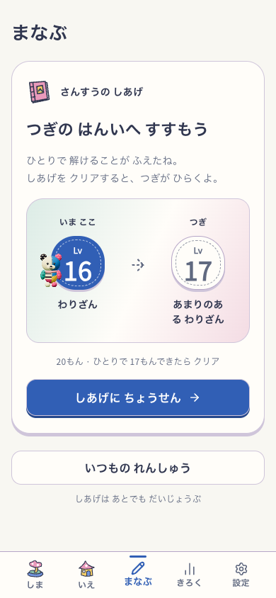
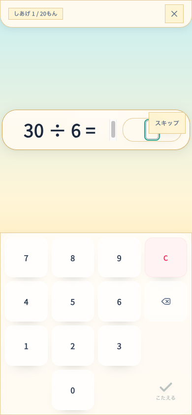
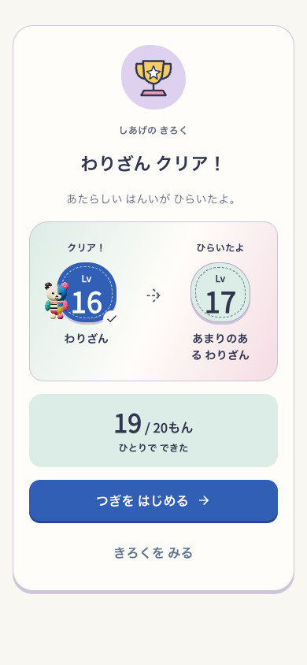
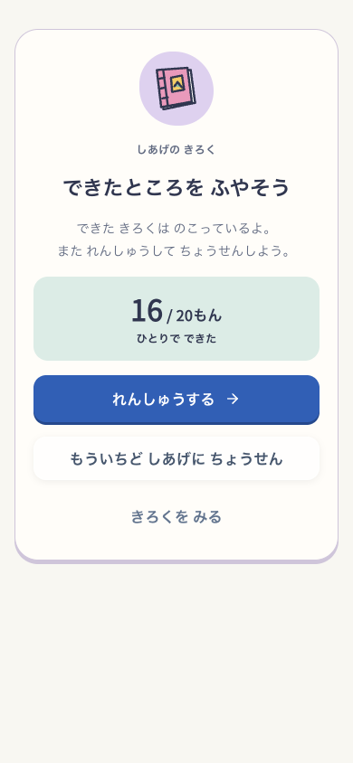
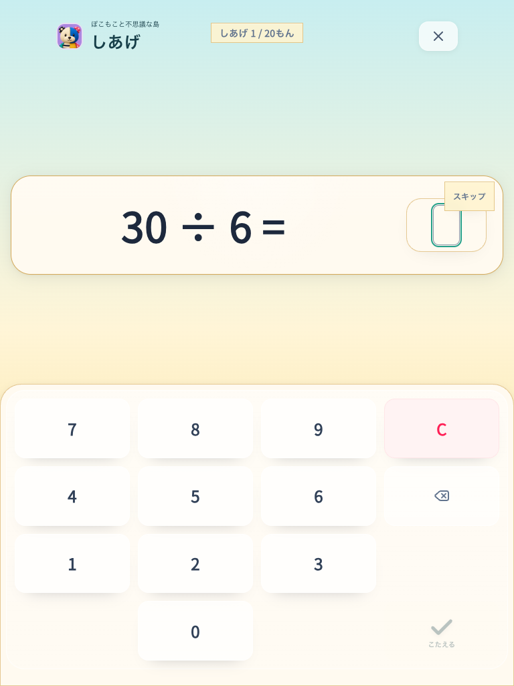
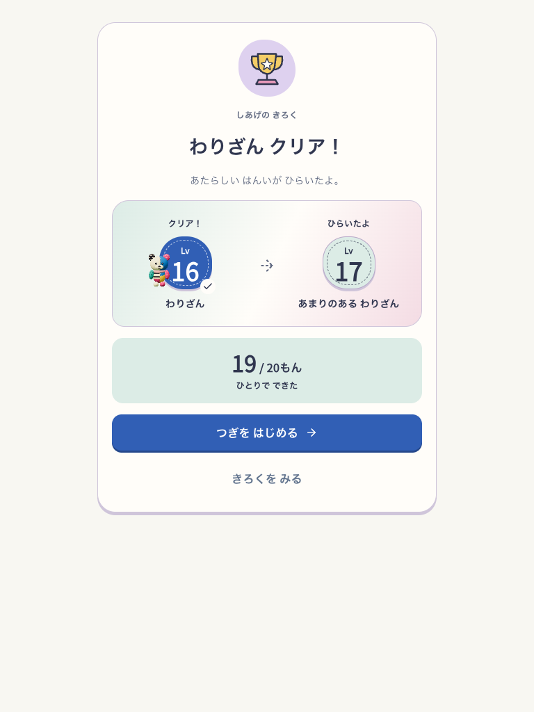
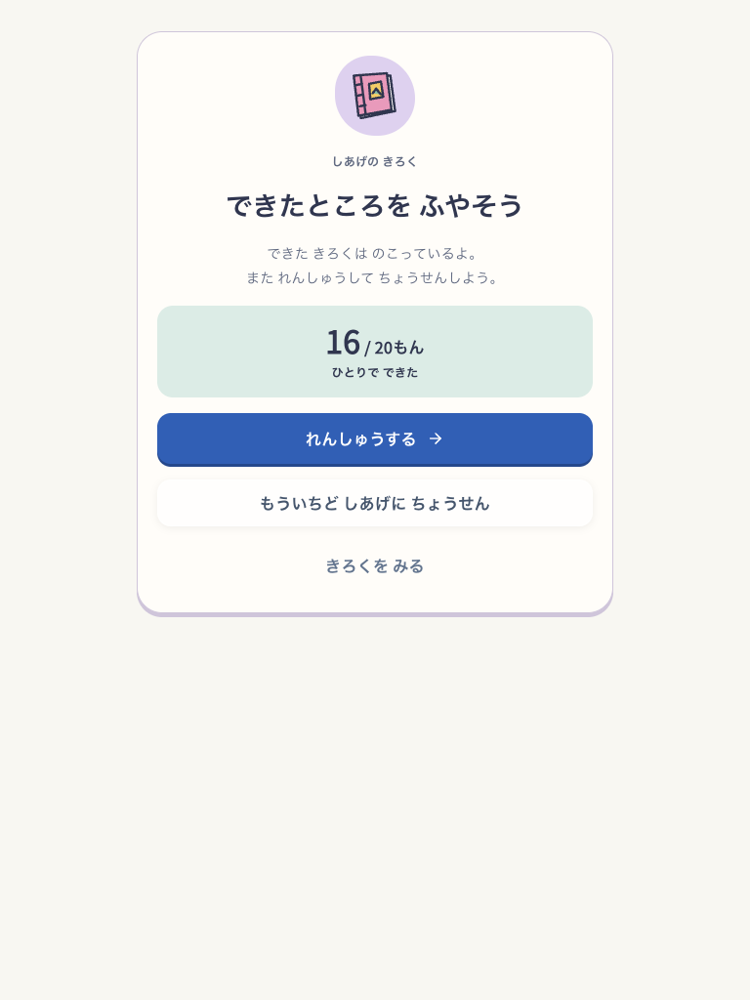

Current clear condition: all 20 answers independently correct. These captures predate the change.
Practice readiness - 20 questions - 17 independent answers open the next level. Local DEV with diagnostic profiles, sound off, reduced motion. No deployment or child observation.






